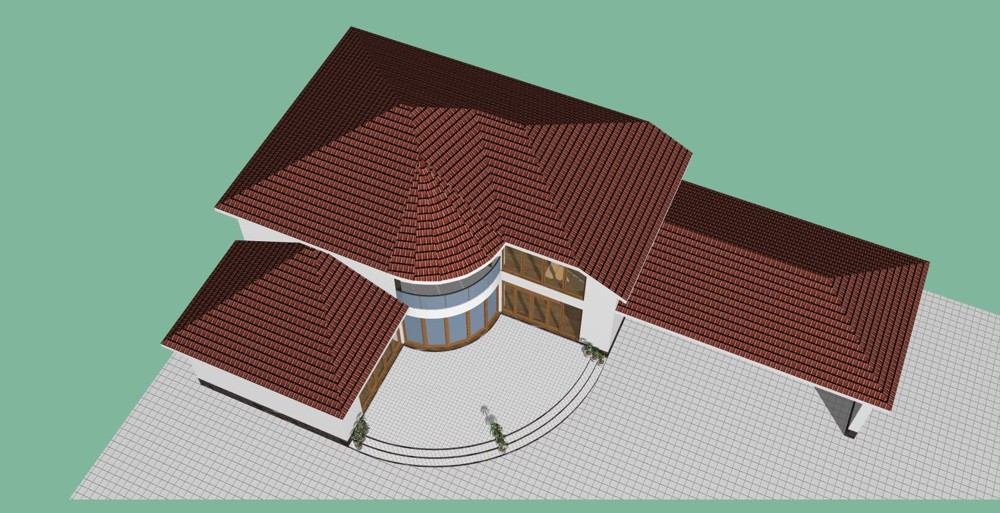
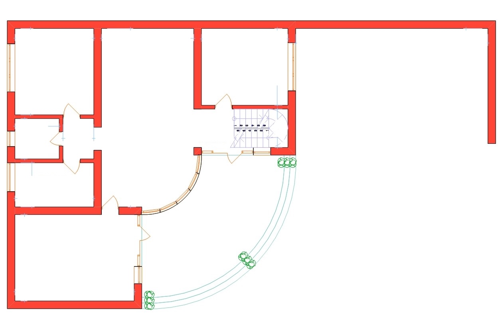
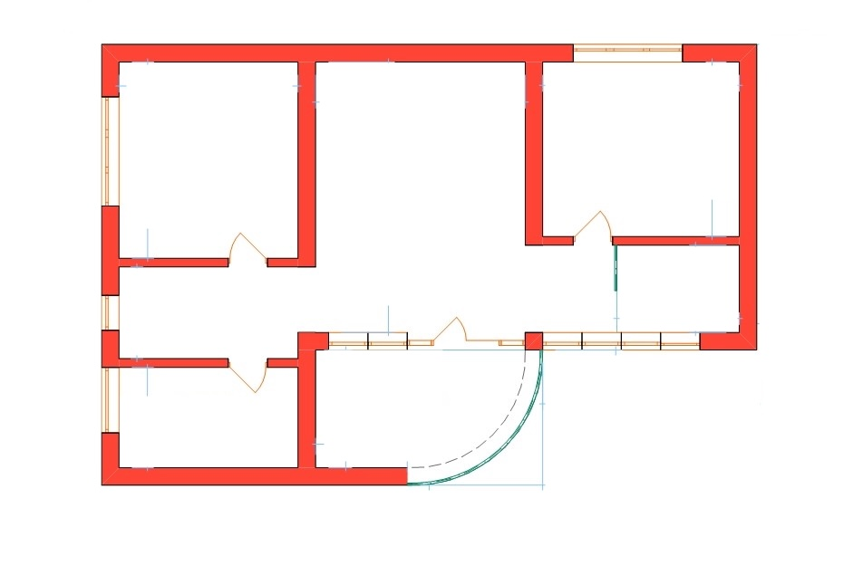
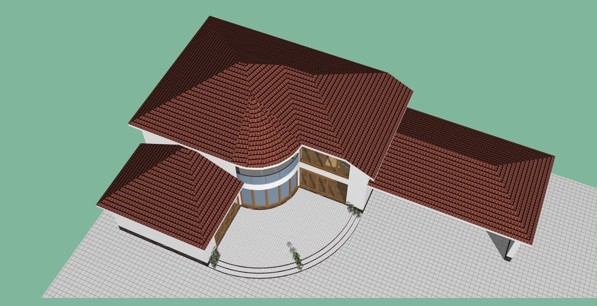
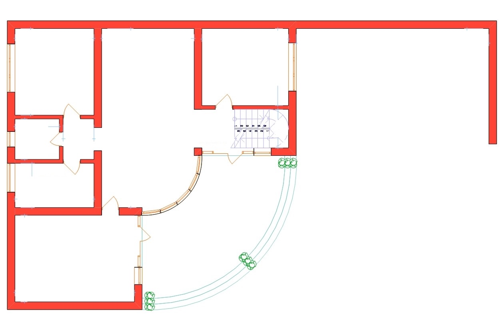
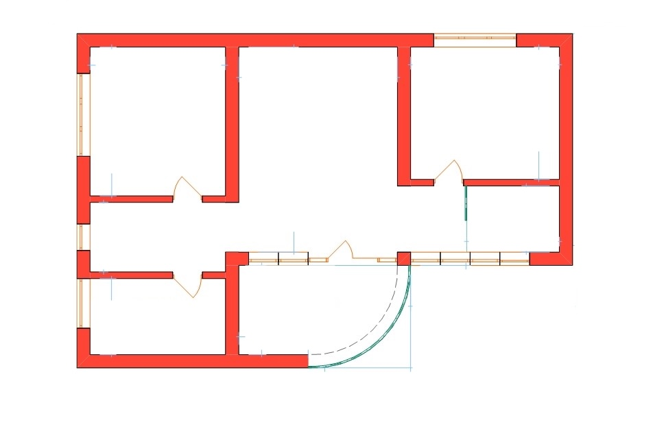

Просторный двухэтажный коттедж с большой террасой и навесом для авто
Предлагаем вашему вниманию проект идеального семейного дома, сочетающего в себе классический уют и современную функциональность. Светлый фасад с контрастной темной кровлей и большими окнами создает ощущение легкости и стиля. Продуманная планировка разделяет пространство на гостевую и приватную зоны, обеспечивая комфорт для всех членов семьи.
Первый этаж — Простор и гостеприимство: Сердцем первого этажа является просторная кухня-столовая (около 28 м²), где удобно собираться всей семьей. Рядом расположен светлый гостиный зал с эркером, который придает помещению особый шарм и объем. Также на этаже находятся:
- Изолированная спальня (18 м²), идеально подходящая для гостей или пожилых родственников.
- Большая ванная комната.
- Отдельная котельная (бойлерная) для автономного обеспечения дома.
- Прихожая с удобной лестницей на второй этаж.
Второй этаж — Приватность и комфорт: Второй уровень отведен под зону отдыха. Изюминкой планировки является вторая гостиная (холл) с выходом на уютный полукруглый балкон. Здесь расположены:
- Две большие спальни (по 18–20 м² каждая), обеспечивающие личное пространство.
- Вместительная гардеробная комната, позволяющая освободить жилые комнаты от шкафов.
- Вторая ванная комната.
Особенности и преимущества:
- Огромный навес для автомобилей: Крытая парковка размером 10 х 6 метров позволяет свободно разместить два автомобиля и защитить их от осадков и солнца.
- Эргономика: Наличие санузлов на обоих этажах и выделенных зон хранения (гардероб, котельная).
- Архитектура: Элегантный эркер на первом этаже и балкон над ним создают выразительный архитектурный облик.
Этот дом — идеальное решение для семьи, которая ценит простор, свет и рациональное использование каждого квадратного метра.